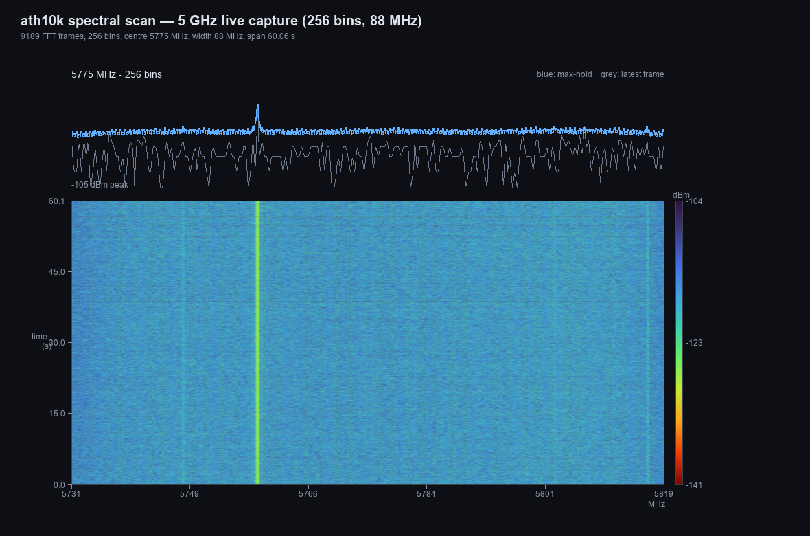
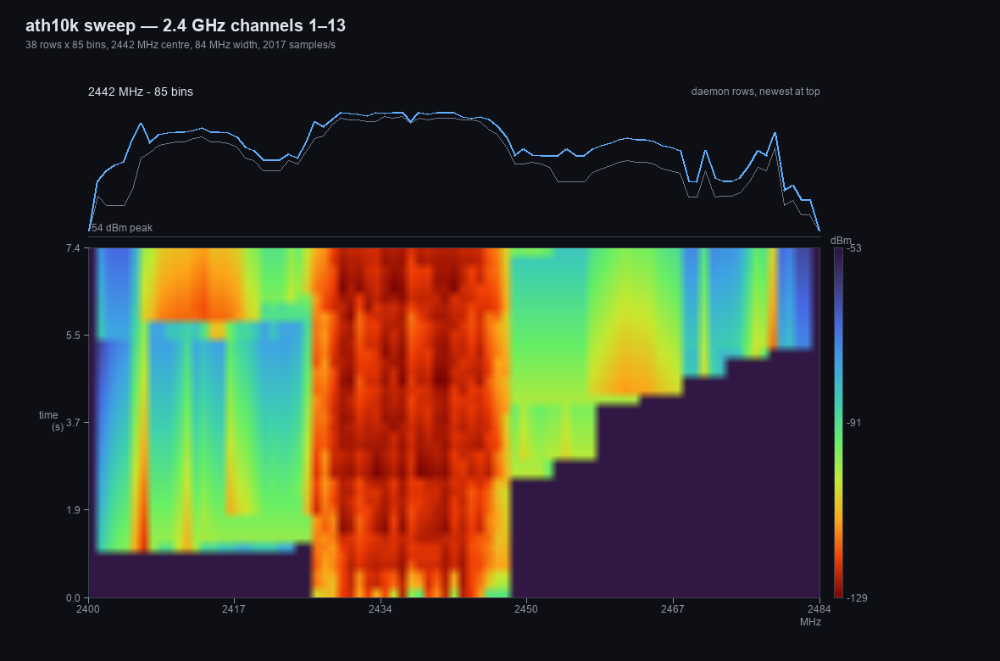
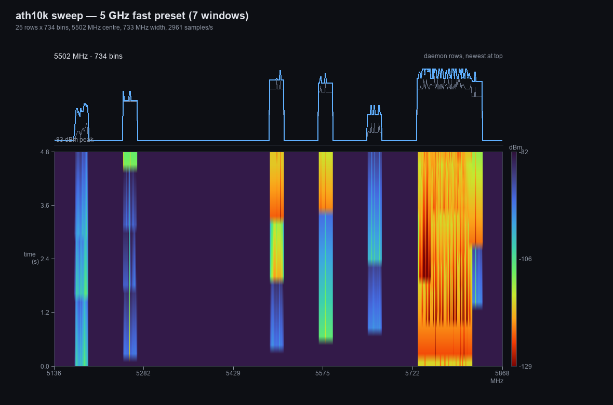
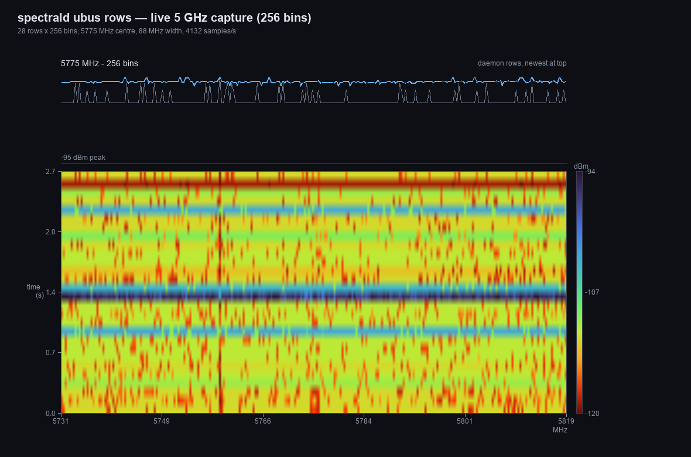

Live FFT waterfall
64, 128 or 256 bins per frame, converted to dBm with the fft_eval-compatible formula, aggregated into a colour waterfall with a max-hold trace.
openwrt-spectral · ath10k spectral scan
spectrald reads the ath10k spectral-scan FFT engine from debugfs, converts every frame to per-bin dBm and serves a live waterfall to LuCI. Two modes: a continuous waterfall of the serving channel, and a channel sweep that scans 2.4 / 5 GHz and stitches the per-channel FFTs into a panorama.
CI builds and signs the feed from main with an ECDSA P-256
key; authorize the key once (see Install). The spectral
kmod in the extra feed is tied to one kernel version — read the
kernel module section before enabling it.
Every 802.11ac Qualcomm Atheros radio can report FFT data from its baseband.
The ath10k driver exposes those frames in
/sys/kernel/debug/ieee80211/phyX/ath10k/spectral_scan0 — but only
if it was built with CONFIG_ATH10K_SPECTRAL. This project turns that
byte stream into a usable spectrum view.
64, 128 or 256 bins per frame, converted to dBm with the fft_eval-compatible formula, aggregated into a colour waterfall with a max-hold trace.
Scans a channel list with iw and stitches the per-channel FFTs
into a single panorama — 2.4 GHz ch 1–13, 5 GHz ch 36–165, a fast
seven-window 5 GHz preset, or a custom list.
spectral status/start/stop/get returns JSON rows of u16 dBm
values. The LuCI view is just one client; scripts can poll the same object.
One small C binary under procd, no Python, no websocket, no extra web server. Idle when not scanning; stops itself 60 s after the last poll.
Canvas waterfall plus spectrum, auto dBm range, palette selection, and mode/bins/radio controls under Status → Spectrum.
Stopping the scan writes disable to the driver and leaves the
radio on its serving channel. Only the optional kmod replaces a stock file.
| Requirement | Details |
|---|---|
| OpenWrt 25.12.x | apk-based (apk-tools 3). The packages are built against the
25.12.6 SDK; install on 25.12.x only. |
| Signed feed key | The feed index and packages are signed with the project's ECDSA P-256
key. Authorize openwrt-spectral.pem in
/etc/apk/keys/ once (one command below); then
apk verifies every download. |
| Architecture | arm_cortex-a7_neon-vfpv4, target ipq40xx/generic.
This is the only architecture in the feed right now. |
| Spectral-enabled ath10k | This is the one real prerequisite. The stock OpenWrt
kmod-ath10k-ct is built without CONFIG_ATH10K_SPECTRAL,
so spectral_scan0 does not exist. The
extra feed ships a rebuilt kmod for kernel
6.12.112; alternatively build your own image with
CONFIG_PACKAGE_ATH_DEBUG=y and
CONFIG_PACKAGE_ATH_SPECTRAL=y. |
| Kernel relay support | CONFIG_RELAY=y. Stock 25.12 kernels already have it, so a
kmod rebuild is enough — no kernel rebuild. |
| debugfs | Mounted at /sys/kernel/debug (the default on OpenWrt). |
| iw | iw is used to trigger the per-channel scans in sweep mode.
It is normally installed; the daemon reports a clear error if it is missing. |
| LuCI (optional) | luci-base for the web view. The daemon and ubus API work
without LuCI. |
| Shell access | SSH as root for the install steps. |
| Disk | About 200 KB for the daemon and the LuCI app; the kmod is about 285 KB. |
# release + architecture (expect 25.12.x / arm_cortex-a7_neon-vfpv4)
grep -E '^(DISTRIB_RELEASE|DISTRIB_ARCH)=' /etc/openwrt_release
# kernel version (must match the kmod feed path)
uname -r
# does the spectral interface already exist?
ls /sys/kernel/debug/ieee80211/phy*/ath10k/ 2>/dev/nullIf the last command prints nothing, install the spectral kmod from the extra feed first.
Run these on the router over SSH. The feed is a static apk repository served by
GitHub Pages; its indexes are signed with the project's ECDSA P-256
key, so package checksums are covered. Authorize the key once and
apk verifies every download — no --allow-untrusted needed.
wget -O /etc/apk/keys/openwrt-spectral.pem \
"https://fmu.github.io/openwrt-spectral/openwrt-spectral.pem"
echo "https://fmu.github.io/openwrt-spectral/arm_cortex-a7_neon-vfpv4/packages.adb" >> /etc/apk/repositories.d/customfeeds.list
apk update
apk add --upgrade spectrald luci-app-spectralThen open LuCI → Status → Spectrum. For a CLI-only setup install
just spectrald.
luci-app-spectral-1.0-r4.apkspectrald-1.0-r3.apkThe feed's index and packages are signed. Install the public key in
/etc/apk/keys/; its filename must keep the .pem
suffix:
wget -O /etc/apk/keys/openwrt-spectral.pem \
"https://fmu.github.io/openwrt-spectral/openwrt-spectral.pem"OpenWrt keeps extra repositories in
/etc/apk/repositories.d/*.list; append the index URL:
echo "https://fmu.github.io/openwrt-spectral/arm_cortex-a7_neon-vfpv4/packages.adb" >> /etc/apk/repositories.d/customfeeds.listapk update
apk add --upgrade spectrald luci-app-spectralIf apk reports an untrusted signature, the
key from step 1 is missing or in the wrong place.
ubus call spectral status
# expected: {"ok":true,"running":false,...}
ls /sys/kernel/debug/ieee80211/phy*/ath10k/spectral_scan0 # after the kmod is installed
Both feed indexes are signed with the project's ECDSA P-256 key; apk
verifies each package against the checksums covered by the signed index. The
public key is served next to the .adb index:
wget -O /etc/apk/keys/openwrt-spectral.pem \
"https://fmu.github.io/openwrt-spectral/openwrt-spectral.pem"
sha256sum /etc/apk/keys/openwrt-spectral.pem
# expect: a5106a64bdff0112e53a63bbc870fa2180c60800c2958a813c64b8e2d883c358The private key exists only as a GitHub Actions secret; it is
not in the repository. The same key is used for future feed builds. If you prefer
to keep the key out of the router's global keyring, you can also pass
--keys-dir to a dedicated directory instead of installing it under
/etc/apk/keys/.
sed -i '\#fmu.github.io/openwrt-spectral#d' /etc/apk/repositories.d/customfeeds.list
rm -f /etc/apk/keys/openwrt-spectral.pem
apk updateThe installed packages stay; use apk del spectrald luci-app-spectral
to remove them.
Read this before installing. The kernel module replaces the
stock kmod-ath10k-ct package with a build that enables
CONFIG_ATH10K_SPECTRAL. It is tied to one exact kernel
version (6.12.112 with OpenWrt's kernel ABI), is not an upstream OpenWrt
package, and can break Wi-Fi if the module or kernel do not match. The kmod feed
index is signed with the same key as the main feed (authorize it first, see
Install). Keep a way to reach the router over
Ethernet while testing, and read the
recovery steps first.
OpenWrt only compiles the ath10k spectral code when
CONFIG_PACKAGE_ATH_SPECTRAL is set
(package/kernel/mac80211/ath.mk), and the stock image ships it
disabled. The driver's spectral.c and the 10.4 WMI commands are
already present; the kernel side needs relayfs, which stock 25.12 kernels already
provide (CONFIG_RELAY=y). So the fix is a kmod rebuild, not a kernel
rebuild.
| Item | Value |
|---|---|
| Kernel | 6.12.112 (OpenWrt 25.12.6, ipq40xx) |
| Kernel ABI | 6.12.112~1ef2780854971e23a655b05e5b5c3630-r1 |
| Package | kmod-ath10k-ct-6.12.112.2025.12.01~bb84e159-r1 (regular buffers) |
| Driver source | OpenWrt feeds/base/kernel/ath10k-ct at 2025.12.01~bb84e159 (Candela CT driver) |
| Kernel dependency | kernel=6.12.112~1ef2780854971e23a655b05e5b5c3630-r1 — apk refuses a mismatch |
| SHA-256 (apk) | ca2aac7f96d2b018d54131fcf9702f26581266610a39f26bcaca59aa634d6c5e |
echo "https://fmu.github.io/openwrt-spectral/kmods/6.12.112-1-1ef2780854971e23a655b05e5b5c3630/packages.adb" >> /etc/apk/repositories.d/customfeeds.listapk update
apk add --upgrade kmod-ath10k-ctOnly install this on kernel 6.12.112 with the ABI above. On a
different kernel the dependency check fails — do not force it.
kmod-ath10k-ct-6.12.112.2025.12.01~bb84e159-r1.apkrebootDo not unload/reload the ath10k modules while hostapd is
running. In testing, a hot rmmod/insmod left the
5 GHz AP unable to start until a reboot (2.4 GHz kept working). A
reboot loads the module cleanly.
ls /sys/kernel/debug/ieee80211/phy*/ath10k/spectral_scan0
iw dev | grep -E 'phy#|Interface|channel'
ubus call spectral statusIf the Wi-Fi AP does not come back, restore the stock package and reboot. A copy of the official OpenWrt kmod is published next to the feed (same package, spectral disabled):
wget -O /tmp/kmod-stock.apk \
"https://fmu.github.io/openwrt-spectral/kmods/stock/kmod-ath10k-ct-official-6.12.112.2025.12.01~bb84e159-r1.apk"
apk del kmod-ath10k-ct
apk add /tmp/kmod-stock.apk
rebootThe stock kmod is signed by OpenWrt's release key, which a
standard image already trusts. If your image does not have it, add
--allow-untrusted to that apk add (local file only).
Official upstream copy:
downloads.openwrt.org kmods/6.12.112-1-1ef…/kmod-ath10k-ct-…
· SHA-256: b1f261de4da11583a77eea4dbe056b38188f15920804d85bb71383e78c335436.
If Wi-Fi is down and SSH is unreachable: connect a computer to
a LAN port (Ethernet) and SSH to 192.168.1.1, then run
the commands above. If the router does not answer at all, boot into OpenWrt
failsafe mode (power-cycle and press the reset/failsafe button as
instructed by the bootloader) or reinstall the stock image with
sysupgrade. Keeping a recent configuration backup is recommended
before touching kernel modules.
sed -i '\#fmu.github.io/openwrt-spectral/kmods#d' /etc/apk/repositories.d/customfeeds.list
apk updateThe kmod binary is a build of the GPLv2
ath10k-ct driver as
packaged by OpenWrt's feeds/base/kernel/ath10k-ct. The build recipe is
in feeds/kmods/README.md in the repository; no kernel patches are
applied. The daemon and LuCI app are MIT-licensed.
Live FFT data from a QCA4019 radio, rendered by the same pipeline the LuCI view draws (max-hold, turbo palette). These are captures, not mock-ups.




spectrald: 28 ubus rows
× 256 bins, 100 ms each, max-hold over a 2.7 s 5 GHz capture.The spectrum trace above each waterfall is the max-hold; colours are dBm with the same auto-range the LuCI view uses.
The LuCI view is a client of the spectral ubus
object; everything can be scripted.
# phy0 = 2.4 GHz, phy1 = 5 GHz (check `iw dev`)
ubus call spectral start '{"phy":1,"bins":256}' # 64/128/256 bins
ubus call spectral status
ubus call spectral get '{"cursor":0}' # rows of u16 dBm+128
ubus call spectral stopubus call spectral start '{"phy":0,"bins":64,"mode":"sweep","preset":"2g"}'
ubus call spectral start '{"phy":1,"bins":256,"mode":"sweep","preset":"5g"}'
ubus call spectral start '{"phy":1,"bins":256,"mode":"sweep","preset":"5g-fast"}'
# custom channel list
ubus call spectral start '{"phy":1,"bins":256,"mode":"sweep","freqs":"5180 5260 5500 5745 5825"}'Presets: 2g (ch 1–13, 64 bins), 5g (ch 36–165,
256 bins), 5g-fast (seven 80 MHz windows). Sweep mode briefly
takes the radio off-channel for each scan; expect small client hitches and lower
throughput while it runs. The panorama rows fade (1 dB per row) so the
waterfall shows the sweep in progress.
Status → Spectrum. Pick Mode (single channel or a sweep preset; the radio and FFT bins are selected automatically), press Start, and adjust the dBm range or colour map as needed. The daemon stops itself 60 s after the last poll.
spectrald dBm conversion, 10 rows/sspectral_scan0The running ath10k kmod was built without CONFIG_ATH10K_SPECTRAL.
Install the spectral kmod and reboot, or build your own image
with CONFIG_PACKAGE_ATH_DEBUG=y and
CONFIG_PACKAGE_ATH_SPECTRAL=y (and CONFIG_PACKAGE_MAC80211_DEBUGFS=y).
check dmesg | grep ath10k if it still does not appear.
apk says “UNTRUSTED signature”The repository key is not in /etc/apk/keys/. Download
openwrt-spectral.pem from the site root into that directory (see
Signature & trust) and run apk update again.
The feed indexes are signed; --allow-untrusted should not be needed. Only the local stock-recovery .apk may require it if your
image lacks OpenWrt's own release key.
Its dependency is the exact kernel
6.12.112~1ef2780854971e23a655b05e5b5c3630-r1. If you upgraded the
kernel or run another OpenWrt release, the feed's kmod is the wrong build. Do not
force it; build a matching kmod instead (recipe in the repository).
That is the known hot-reload failure mode: hostapd's AP vdev is left in an
inconsistent state (Match already configured /
Failed to set beacon parameters). Reboot the router instead of
rmmod/insmod. The module itself loads normally at boot.
Check ubus call spectral status: running should be true,
samples should increase and cols should be non-zero. A
very busy channel can reduce the sample rate. For 80 MHz channels use 128 or
256 bins — 64 bins is not valid at 80 MHz. The dBm values are firmware
estimates and can sit below the reported noise floor; the view auto-ranges.
It can cause brief interruptions: each scan takes the radio off its serving channel for a short dwell. Use single-channel mode for continuous monitoring of your own channel; use the sweep when you need to look across channels.
The procd service stays enabled but does nothing until start is
called, and it stops the scan after 60 s without a get poll.
Disable it with /etc/init.d/spectrald disable.
Source, package Makefiles and the feed build:
github.com/fmu/openwrt-spectral.
The daemon and LuCI app are MIT. The kmod is a build of the
GPLv2 ath10k-ct
driver as packaged by OpenWrt's base feed; its source links are recorded in
feeds/kmods/README.md.
ath10k spectral-scan documentation: wireless.docs.kernel.org · reference userspace parser: FFT_eval. Not affiliated with Qualcomm Atheros or the OpenWrt project.